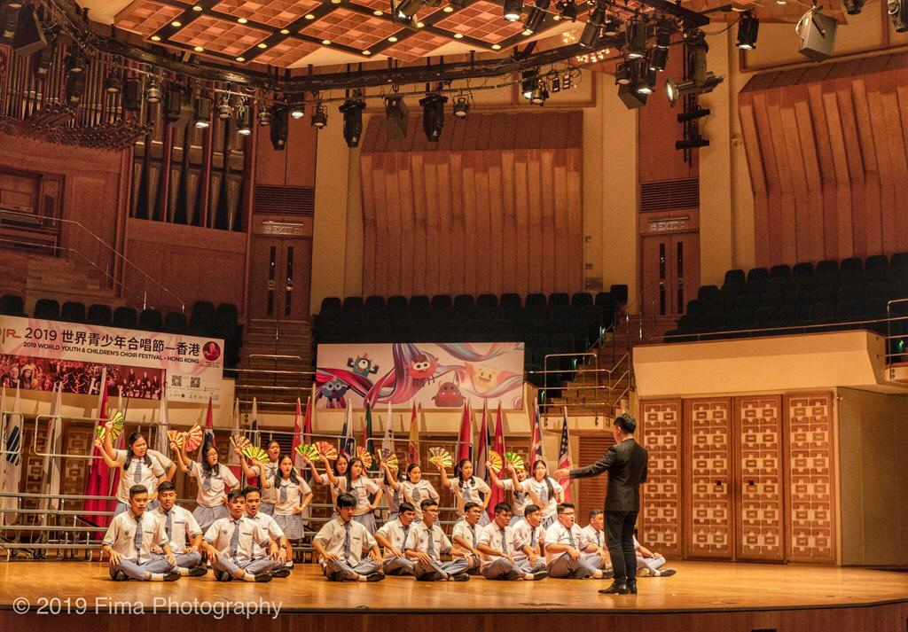

Let me intoduce my self
Nama : Rondonuwu, Angelly Vincentsia
Jenis
Kelamin : Perempuan
NIM : 105022010030
Jurusan : Teknik Informatika
Umur : 18 thn
Agama : Kristen Protestan
TTL : Tomohon,23 April 2003
Alamat : Perum pemda Kalawat blok H no 5
Nama Ayah : Hendly A. Rondonuwu
Nama Ibu : Joise M.Y. Tumbol
Hobi :
| Riwayat pendidikan | |
|---|---|
| TK | TK GMIM Kiawa |
| SD | SD Katolik Kiawa & SD Kr.Eben Haezar 1 Manado |
| SMP | SMP Kr.Eben Haezar 1 Manado |
| SMA | SMA Kr.Eben Haezar Manado |
Saya juga suka mengikuti kegiatan yang berhubungan dengan Menyanyi contohnya paduan suara sejak saya masih kecil saya sudah diajari cara bernyanyi oleh ayah saya. Sejak SMP saya sudah mulai mengikuti kegiatan paduan suara, dan pada SMA yaitu SMA Kr. Eben Haezar, saya terpilih untuk masuk ke dalam tim utusan paduan suara sekolah untuk ke Hongkong (Benzar Choir) Strategi Benzar Choir. Pada saat kuliah saya juga mengikuti paduan suara yang ada dalam jurusan saya VOCS
btw this my favorit song ;)